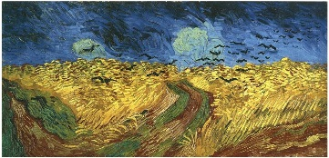

Ways of Seeing by John Berger.
Where art thou?
“It is seeing that establishes our place in the surrounding world.”Van Gogh's last painting as a means of telling a story: an emotional state as well as a possible indicator of impending doom
idealized paintings
appeals to radiant ways of life,
PROMOTES
the illusion or promise of a dream, but
THREATENS
through anxieties and fear-inducing thoughts
BE SKEPTICAL!